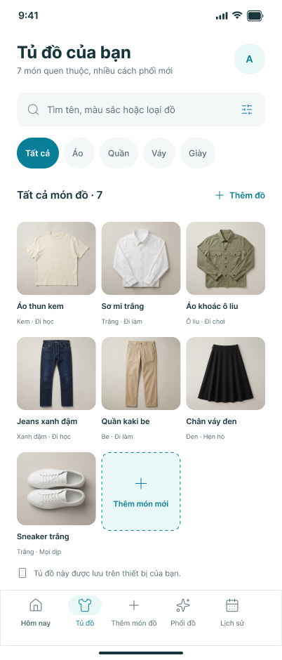
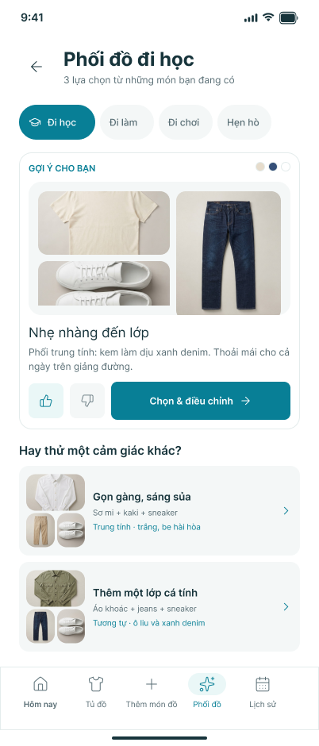
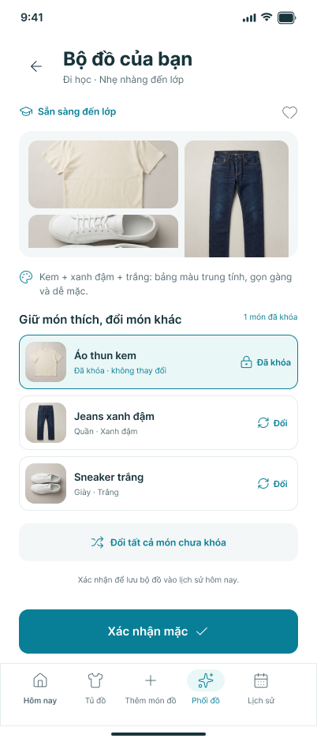

Tìm lại món trong tủ Chiếc áo thun kem quen thuộc có thể đi cùng những gì? Xem ảnh các món trong tủ, rồi lọc theo quần hoặc giày để tìm cả những món đã lâu bạn quên mặc. 
Chọn một bộ để đi học Chọn “Đi học” để thu hẹp lựa chọn còn ba bộ. Mỗi gợi ý giải thích cách phối, giúp bạn cân nhắc vì sao áo thun kem, jeans xanh và sneaker trắng lại hợp với buổi lên lớp. 
Giữ món thích, đổi món khác Ưng chiếc áo nhưng muốn thử đôi giày khác? Khóa áo rồi đổi riêng giày để khỏi phải chọn lại cả bộ. Khi đã vừa ý, chạm “Xác nhận mặc” để lần sau có thể tìm lại cách phối này. 